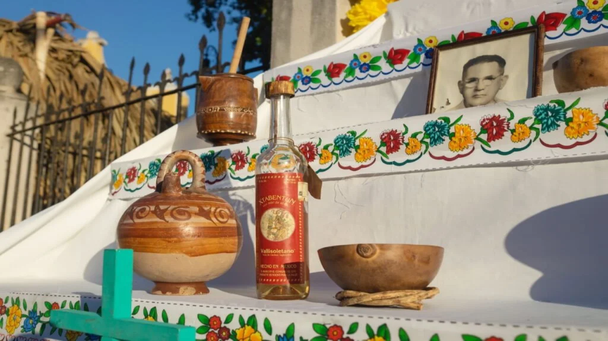
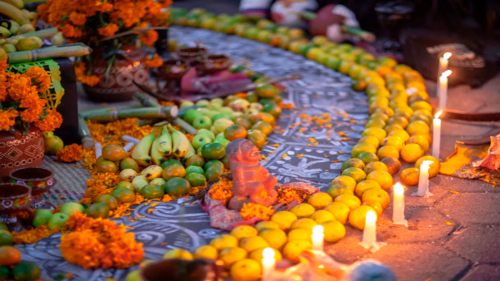
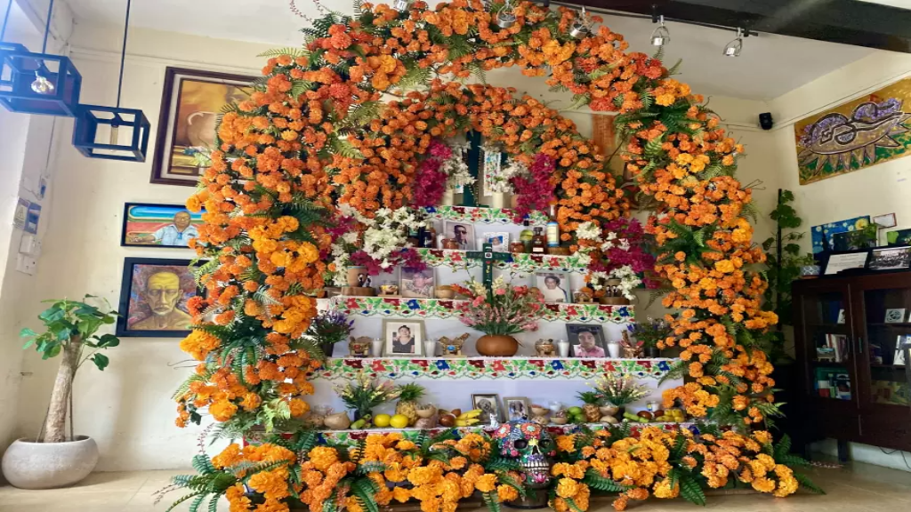
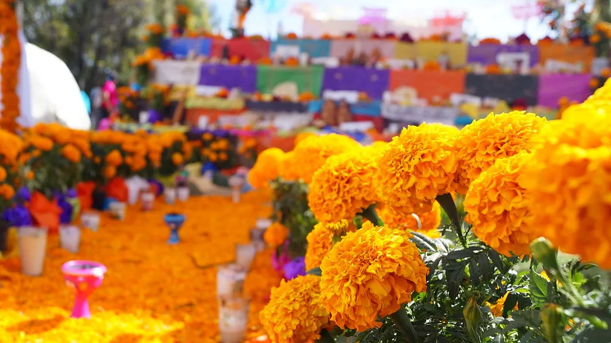
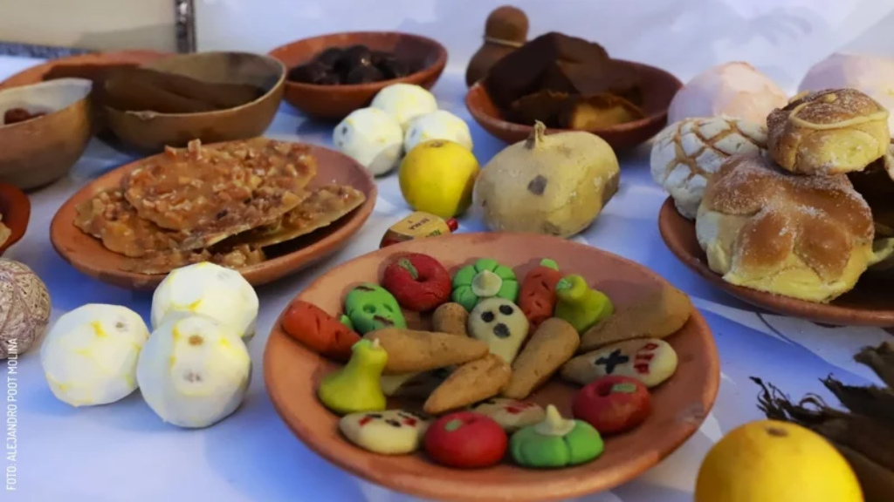
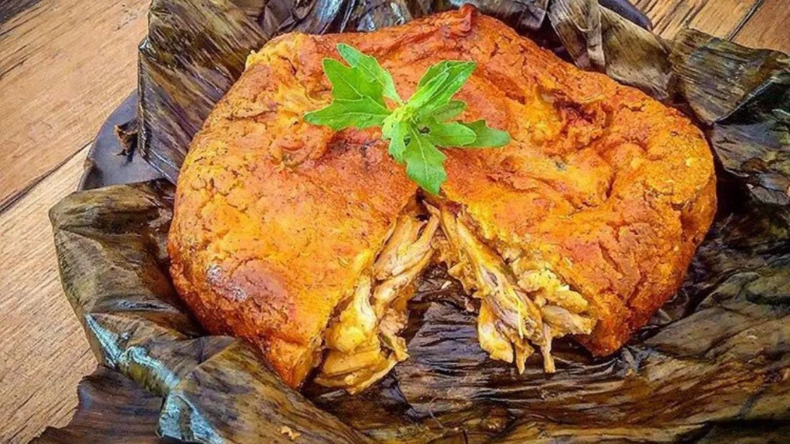
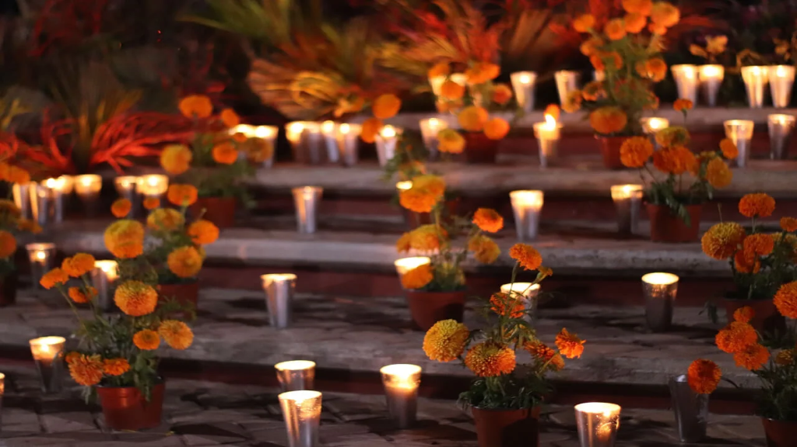
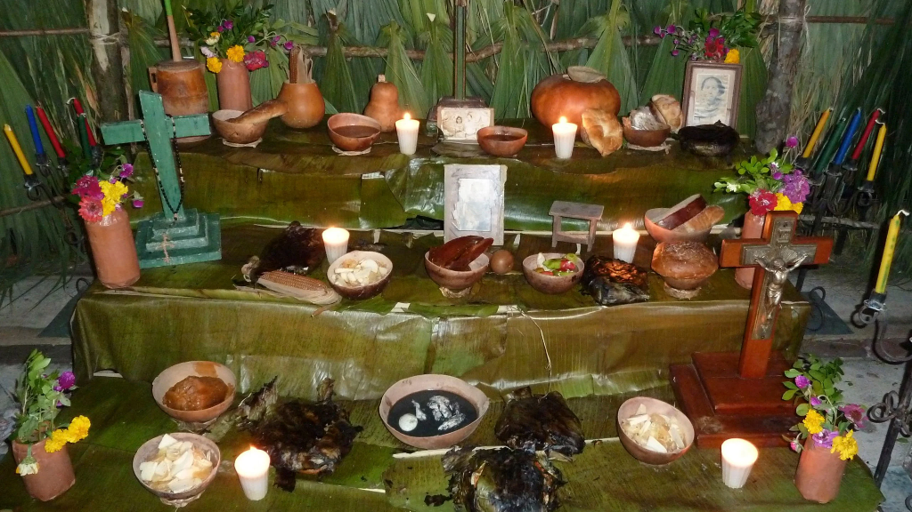

Galería del Hanal Pixán
El arte y la decoración del Hanal Pixán reflejan la profunda conexión entre la vida y la muerte en la cultura maya. Cada altar, flor y vela cuenta una historia: la de las familias que recuerdan con amor a quienes partieron. A través de esta galería, se muestra la belleza, el color y el simbolismo que llenan los hogares campechanos durante esta festividad.
A continuación se presenta una selección de fotografías representativas del Hanal Pixán en Campeche. Cada imagen busca capturar la esencia de esta tradición: la fusión entre el respeto, la espiritualidad y el colorido arte popular que define esta celebración ancestral.







